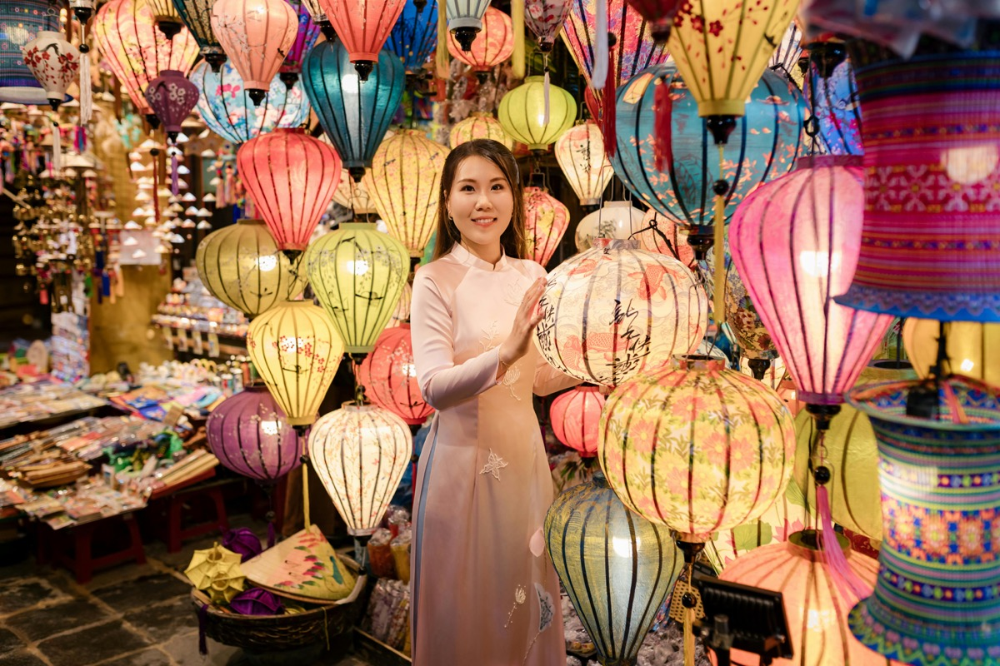

In Vietnam, a market is not just a place to buy things, it is infrastructure. Chợ (market) is where the city feeds itself, where commerce happens outside of retail, and where the social rhythm of Vietnamese daily life is most visible.
Understanding the difference between a local market and a tourist night market is the first thing any visitor to central Vietnam should know before they arrive.
Check prices for your dates in Da Nang
Live rates · Free cancellation on most hotels · Instant confirmation
Da Nang's markets, Han and Con in particular, are working commercial hubs that happen to be accessible to tourists. Hoi An's markets split between the Central Market (local, morning-only, unamplified) and the Night Market (curated for visitors, lantern-lit, priced accordingly).
Neither is fake; both are selective versions of Vietnamese commerce aimed at different audiences.
This guide covers all five major markets across both cities: what each is actually good for, where prices are negotiable and where they're not, what's worth buying and what to skip, and which market matches your travel style. Come with cash, comfortable shoes, and realistic expectations.
Da Nang Markets
Han Market (Chợ Hàn)
Han Market occupies a dedicated building at 119 Tran Phu Street, Hai Chau 1 Ward, on the Han River waterfront in Hai Chau District, three kilometres from My Khe Beach. The ground floor is the most rewarding: fresh produce, street food stalls, spice vendors, and a wet market section.
The upper floors transition into souvenirs, clothing, and tailoring, the section most visitors default to. The building is well-ventilated by Vietnamese market standards but gets noticeably hot by late morning.
Han Market is Da Nang's best-known market and the one most guidebooks direct tourists to. Its reputation rests on three things: the tailoring services on the upper floors, the ground-floor food stalls serving local breakfast and snack dishes, and the range of Vietnamese souvenirs.
It functions simultaneously as a local market for city residents buying produce and a tourist market for visitors buying gifts.
Han Market's upper floor has a dense concentration of tailors offering made-to-measure clothing in 24–48 hours. Quality varies significantly between stalls.
For made-to-measure work, negotiate a firm price and turnaround time before agreeing, bring a reference garment or clear images, and request a fitting before final handover. Budget 300,000–800,000 VND for a simple item; tailored ao dai (Vietnamese dress) runs 500,000–1,500,000 VND depending on fabric.
Note: for serious tailoring, Hoi An has a deeper tradition and wider range of quality operators.
The ground floor food section is Han Market's most authentic element. Stalls serve mì Quảng (Da Nang's turmeric noodle dish, 40,000–60,000 VND), bánh mì, bún bò, chè (Vietnamese sweet soups), and freshly squeezed sugarcane and fruit juices.
The atmosphere at 7–8am is genuinely local, this is where Da Nang workers grab breakfast, not primarily a tourist experience. Point-and-gesture works fine for ordering.
The souvenir selection is standard Vietnam: lacquerware, silk products, bamboo items, coffee, dried fruit, conical hats, embroidery. The same items are available in Hoi An and at most tourist markets, Han Market doesn't have exclusive products.
Prices are negotiable (aim for 40–60% of the opening price on small items). Quality control is the visitor's responsibility, inspect items before buying.
Expect to negotiate for souvenirs and clothing. Open with 50% of the asking price and settle around 60–65%.
Be polite and calm, smile, express genuine interest in the item, and be willing to walk away. Never feel pressured.
For food stalls with visible price lists, the price is fixed. For fresh produce in the ground-floor wet market, light negotiation on larger quantities is normal.
- Best local breakfast stalls in Da Nang
- Central location, easy Grab access
- Tailoring available same-day or next-day
- More manageable scale than Con Market
- English widely spoken in tourist sections
- Hot and crowded by 10am
- Souvenir quality inconsistent
- Tourist pricing in upper floors
- Smaller than Con Market
- Limited parking; walk or Grab
Con Market (Chợ Cồn)
Con Market is Da Nang's largest market and serves the city's population rather than its visitors. It's a multi-floor commercial complex covering fresh produce, meat, fish, dry goods, electronics, clothing, household items, and street food, the kind of market that makes Han Market look curated by comparison.
There is minimal English signage, few vendors speak English fluently, and the experience is genuinely unfiltered. This is where Da Nang shops for daily life.
Con Market's food court and surrounding street food vendors represent some of the most authentic and cheapest eating in Da Nang. Dishes include bún chả cá (Da Nang fish cake noodle soup, 40,000–70,000 VND), mì Quảng, bánh tráng cuốn thịt heo (rice paper pork rolls), and an extensive range of chè.
The lack of tourist menus means Google Translate camera is your menu, point it at the chalk board or laminated card and order accordingly.
Con Market prices are consistently 20–40% lower than Han Market for equivalent items, because the customer base is local. Produce, dry goods, and food are all priced at local rates.
Souvenir and clothing vendors in Con Market are fewer and less polished than Han, but prices reflect this, haggling starts from a lower opening price. If the goal is authentic Vietnamese market shopping at genuine prices, Con Market is the honest answer.
Con Market rewards visitors who are comfortable navigating without English support and who prefer the texture of a real working market over a tourist-friendly experience. It's excellent for photography, for buying local food products (coffee, spices, dried goods) at local prices, and for understanding daily Vietnamese commercial life.
Solo travellers, return visitors, and anyone with even basic Vietnamese food knowledge will get more out of Con than Han.
- Da Nang's largest, most authentic market
- Cheapest food and produce prices
- Best street food concentration
- Genuine local atmosphere
- Coffee, spices, dried goods at local rates
- Almost no English, bring translation app
- Less polished, more chaotic than Han
- Fewer souvenir options for tourists
- Can feel overwhelming for first-time visitors
- Wet market sections are strong-smelling
Son Tra Night Market
Son Tra Night Market is Da Nang's main evening market, positioned near the Dragon Bridge and Han River, the same area that draws tourists for the Saturday and Sunday fire-breathing show. The market is more relaxed and less crowded than Hoi An's Night Market, with a mix of food stalls (grilled seafood, bánh tráng nướng, fresh fruit, boba), souvenir vendors, and local clothing stalls.
It lacks the atmosphere of Hoi An, no lanterns, no ancient town backdrop, but it's an accessible evening activity that pairs naturally with a Dragon Bridge visit. Food quality at the grilled seafood stalls is generally good.
Souvenir quality follows standard Vietnam market patterns. Bargaining applies to non-food items.
- Natural pairing with Dragon Bridge evening
- Good grilled seafood and street snacks
- Less crowded than Hoi An Night Market
- Open-air, easy to navigate
- No distinctive atmosphere vs other night markets
- Generic souvenir range
- Tourist pricing throughout
- Less compelling than Hoi An equivalent

Han Market stays lively well into the evening — the ground floor is best for fresh produce and local snacks.
Hoi An Markets
Hoi An Central Market (Chợ Hội An)
Hoi An Central Market is a genuine working market serving the town's population and surrounding villages. The morning produce section, herbs, vegetables, live seafood, spices, and fresh noodles, is the market at its best.
This is the ingredient source for Hoi An's famous restaurant kitchens, and visiting early means seeing the full freshness of the supply chain. It's also the starting point for cooking classes that begin with a guided market tour.
The covered food stall section serves Hoi An specialties at local prices: cao lầu (150,000–200,000 VND), cơm gà (50,000–80,000 VND), and bánh mì from the legendary Bánh Mì Phương stall, 2 minutes from the market. Several of Hoi An's best cooking class operators start their morning sessions with a guided tour of this market before heading to the kitchen, one of the better ways to understand what you're looking at and eating.
The streets immediately surrounding Hoi An Central Market, particularly Tran Phu and Le Loi, have the highest concentration of tailoring workshops in Hoi An. Quality ranges from very good (family-run workshops with 20+ years of history) to inconsistent (walk-in tourist operations).
For made-to-measure clothing, allow minimum 48 hours for quality work, bring reference garments or clear photos, agree on the final price including alterations before work begins, and request a fitting. Budget 500,000–2,000,000 VND for a quality tailored item.
Arrive before 8:30am for the full market experience, the produce section has largely wound down by 9:30am and the stalls begin packing up by 10–11am. The contrast between the Central Market at 7am and the same streets at noon is significant: early morning is one of the most atmospheric times in Hoi An, and the market is central to that experience.
Pair with breakfast and a walk through the ancient town lanes before tour groups arrive.
- Most authentic market experience in the region
- Best context for cooking class participants
- Proximity to the best tailor workshops
- Genuine local prices for produce and food
- Beautiful in early morning light
- Morning-only, largely finished by midday
- Limited souvenir offering
- Can be crowded on cooking class mornings
"Hoi An's markets and Da Nang's markets serve different purposes. Han Market in Da Nang is the local workhorse — fresh produce, household goods, fabric.
Hoi An's Central Market is more curated and tourist-facing but still authentic and worth exploring."
Hoi An Night Market (Chợ Đêm Hội An)
The Hoi An Night Market is the most photographed market in central Vietnam. Silk lanterns in every colour hang above Nguyen Hoang Street, the Thu Bon River glitters nearby, and the ancient town's yellow walls glow in the evening light.
The atmosphere is genuinely beautiful and unlike anything in Da Nang. This is the version of Hoi An that appears in every travel campaign, and it earns its reputation for atmosphere unconditionally.
The Night Market is unambiguously tourist-oriented. Stall products repeat significantly, lanterns, silk scarves, embroidered items, keyrings, paintings, and opening prices are set at tourist levels.
Bargaining is expected and effective: start at 40–50% of the asking price. Food stall prices are 20–50% higher than equivalent items in the Central Market or local restaurants.
The experience trades authenticity for atmosphere and does so without pretence, both parties understand the arrangement.
Food options at the Night Market include bánh mì (45,000–70,000 VND), fresh spring rolls, grilled corn and sweet potato, bánh xèo (crispy Vietnamese crêpe), and a range of fruit and dessert stalls. The bánh tráng nướng (grilled rice paper "pizza") is popular and genuinely good.
Several stalls serve local Quảng Nam specialties. Quality is variable, find the stall with the longest queue of Vietnamese visitors, not tourists, for the best version.
The Night Market is both visually spectacular and primarily commercial, these are not contradictions. The lanterns are genuinely handmade by Hoi An families, the street food is genuinely Vietnamese, and the atmosphere is genuinely beautiful at 7–8pm before the crowds peak.
The inauthenticity critique applies mainly to the souvenir pricing and the repetition of products, not to the cultural experience of being there. Go with realistic expectations: experience first, shopping second.
- Most atmospheric market in central Vietnam
- Best place to buy handmade silk lanterns
- Good street food options when chosen carefully
- Beautiful photography setting at golden hour
- Easy walking from the Ancient Town

Hoi An's market streets are best explored on foot — bargain respectfully and carry small notes.
Full Market Comparison
| Market | City | Best For | Tourist Level | Food Quality | Souvenirs | Bargaining | Atmosphere |
|---|---|---|---|---|---|---|---|
| Han Market | Da Nang | Tailoring, breakfast, tourist intro | Medium | Good | Standard | Essential | Functional, pleasant |
| Con Market | Da Nang | Local food, cheapest prices, authenticity | Low | Excellent | Limited | Essential | Raw, unfiltered, genuine |
| Son Tra Night Market | Da Nang | Evening activity near Dragon Bridge | High | Decent | Generic | Yes | Pleasant, unremarkable |
| Hoi An Central Market | Hoi An | Morning produce, cooking classes, tailors | Low–Med | Excellent | Minimal | For produce | Authentic, photogenic |
| Hoi An Night Market | Hoi An | Atmosphere, lanterns, evening experience | Very High | Variable | Good (lanterns) | Essential | Spectacular, iconic |
What to Buy (and What to Skip)
Con Market and Han Market both have spice/dry goods vendors selling whole bean and ground Vietnamese robusta coffee. Buy beans, not pre-ground, robusta degrades quickly once ground.
Trung Nguyen is the reliable brand; ask for "cà phê nguyên hạt" (whole bean). Con Market prices: 80,000–150,000 VND per 500g.
Authentic handmade silk lanterns are Hoi An's best souvenir and available nowhere else in the same quality. Look for silk or cotton fabric (not polyester), bamboo frames, and hand-stitched seams.
Ask if they make on-site. Collapsible versions travel well.
Prices: 100,000–300,000 VND for quality pieces. The Night Market and workshop streets around Tran Phu are the best sources.
Both Han and Con markets have vendors selling vacuum-packed dried mango, jackfruit, dragonfruit, and sweet potato chips, all genuinely good and distinctly Vietnamese. Con Market has better prices and fresher stock turnover.
Check the packaging date and buy sealed bags. Weight-efficient souvenirs that travel well without customs issues in most countries.
Con Market's spice section sells Vietnamese cinnamon (cassia), star anise, dried chilli, and pho spice mixes at prices significantly below supermarkets or tourist shops. Buy fresh whole spices, not pre-packaged blends if possible.
Fish sauce (nước mắm) and shrimp paste travel less well in luggage, sealed bottles are fine but airline rules apply.
Hoi An is Southeast Asia's best tailoring destination. For quality results: visit multiple workshops before committing, bring clear reference photos or a garment to copy, allow 48–72 hours minimum for quality work (same-day is rush work), and insist on a fitting before collection.
Budget 500,000–2,500,000 VND for a well-made item. Han Market tailors are functional for simple items; don't expect Hoi An quality.
Vietnamese lacquerware (bowls, boxes, trays with embedded eggshell or mother-of-pearl) is produced in workshops around Hoi An and sold at most markets. Quality varies dramatically.
Authentic handmade lacquerware has deep, even colour, smooth finish, and visible craft quality. Mass-produced imports have shallow colour and rough edges.
Price is a reasonable proxy for quality, 200,000 VND for a lacquer bowl is probably not handmade.
Branded goods at market prices (counterfeit, customs risk in many countries). Coral or shell products (prohibited import/export in most countries, fined on arrival home).
Ivory or bone carvings (same issue). Pre-packaged "natural" cosmetics from unmarked stalls (no ingredient labelling, unknown content).
"Antiques" at market prices, almost universally reproductions. Cheap silk, usually polyester; the burn test works: silk chars, polyester melts.
The reliable indicators: weight (real silk and lacquerware are heavier than synthetic equivalents), finishing detail (hand-stitching is visible and slightly irregular; machine work is perfectly uniform), origin (ask directly where and by whom it was made, workshops will answer confidently, resellers won't), and price (genuine craft work cannot be sold for 50,000 VND and sustain the maker). When in doubt, buy directly from a workshop rather than a market stall.
Practical Tips for Visiting Markets
Bring cash, almost all market vendors in Da Nang and Hoi An are cash only. Small denomination VND notes (20,000, 50,000, 100,000) are more practical than large bills (500,000) which vendors may struggle to change for small purchases.
Withdraw from a Vietcombank or BIDV ATM before the market visit. Keep cash in a front pocket or money belt in crowded sections, not in a back pocket or open bag.
Morning (6–9am) is the best window for Con Market, Han Market, and Hoi An Central Market, freshest produce, coolest temperature, and most authentic local atmosphere before tourist foot traffic builds. Night markets operate from 5–6pm; the best window is 6:30–8:30pm when stalls are fully operational but before the densest crowds.
Avoid any indoor market between 10am and 2pm in June–August, the heat is significant.
Smile, make genuine eye contact with the vendor, and express actual interest in the item before negotiating. Open with 50–60% of the asking price.
Don't lowball aggressively, an offer of 20% of asking price is insulting and shuts down the negotiation. Accept the first counteroffer that's within 15–20% of your target.
Once you agree on a price, complete the purchase, backing out after agreement is poor form. Walk away calmly if the gap is too large; vendors sometimes call you back with a better price.
Local market food is generally safe and vendors have strong incentives to maintain quality, they serve the same customers every day. Risk increases for anything that has been sitting out in heat for extended periods: choose stalls where food is cooked to order and has visible turnover.
Avoid raw shellfish from market vendors unless from a known-quality stall. Street food at Con Market and Hoi An Central Market that's been served to locals for years is a reliable indicator of food safety in practice.
Indoor markets (Han, Con, Hoi An Central) have limited ventilation. In June–August, plan market visits for before 9am or after 5pm.
Carry a small bottle of water. Wear breathable cotton or linen.
Take breaks at the market's edge where airflow is better. The Hoi An Night Market has natural ventilation being outdoor and open-plan, more comfortable in summer evenings than indoor daytime markets.
Da Nang and Hoi An markets are safe by regional standards. Pickpocketing in dense crowds is the primary risk, use a crossbody bag worn in front, keep your phone in a closed pocket when not in use, and don't leave bags unattended at food stalls.
The Hoi An Night Market at peak hour (7:30–9pm in high season) is the densest crowd environment in the region and warrants the most awareness. Violent crime at or near markets is extremely rare.

Which Market Is Best for You?
| Traveller Type | Best Market | Why |
|---|---|---|
| First-time visitors | Han Market (morning) | English-friendly, accessible, good breakfast stalls, central location. Manageable introduction to Vietnamese market culture. |
| Food-focused travellers | Con Market + Hoi An Central | Con Market for Da Nang's best street food at local prices; Hoi An Central for morning cooking class context and regional specialties. |
| Atmosphere seekers | Hoi An Night Market | No market in the region matches the visual atmosphere. Go in with experience expectations rather than shopping expectations. |
| Budget travellers | Con Market | Da Nang's cheapest prices for food, produce, and dry goods. No tourist markup. Rewards confidence with low-cost, high-quality eating. |
| Couples / Honeymooners | Hoi An Night Market + Central | Night Market for the evening atmosphere; Central Market the following morning for the contrast and cooking class option. |
| Families with children | Han Market + Son Tra Night | Han Market is manageable and English-friendly. Son Tra Night Market is open-air with food options children will eat. Both are low-stress. |
| Digital nomads | Con Market (weekly shop) | Best source for coffee, snacks, and groceries at local prices. A 45-minute visit replaces a supermarket run at significantly lower cost. |
| Luxury travellers | Hoi An Night Market (lanterns) + tailors | The lantern purchase and a well-chosen tailoring workshop are the two market activities that scale up in quality and experience at higher spend. |
| Photography | Hoi An Central Market (dawn) + Night Market | Central Market at 6–7am offers the best unposed market photography in the region. Night Market offers the most visually distinctive evening setting. |
→ 7-Day Itinerary, where markets fit in a full week across Da Nang and Hoi An.
→ Da Nang Dining Guide, restaurant picks and food scene overview beyond the markets.
→ Budget Guide, how much to budget for shopping and food across the trip.
→ Transport Guide, Grab routes to Han Market, Con Market, and Hoi An.
→ Travel Mistakes Guide, includes common shopping and transport mistakes to avoid.
Common Questions
Da Nang & Hoi An Markets: FAQ
Ready to book your Da Nang stay?
Compare top hotels, check live rates, and book with free cancellation on most properties. Best hotels in Da Nang · Where to stay guide
Compare all Da Nang hotels on Booking.com →Affiliate disclosure: we earn a small commission when you book via our links, at no extra cost to you.